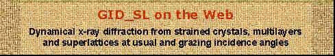
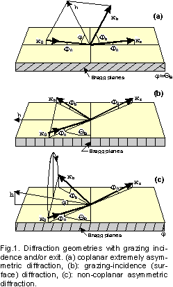
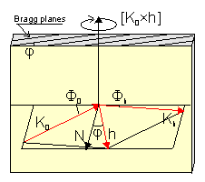

|
This is a new version of X-Ray Server's diffraction program launched in June-2020. Compared to the previous version, it provides the following benefits and features:

This page is a CGI interface to my program GID_sl simulating dynamical x-ray diffraction from strained crystals, multilayers, and superlattices. The name 'GID_sl' comes from the original aim of this program to simulate grazing incidence x-ray diffraction from multilayers and superlattices [1-3]. Later on, GID_sl was extended to extremely asymmetric geometries and usual Bragg-case [4]. At present this program is applicable to any coplanar and non-coplanar Bragg-case geometry with diffraction scans round arbitrary axes. Some typical examples of grazing-incidence geometries where the GID_sl can be used are shown on Fig.1.
The program can simulate the following profiles of structure parameters and defects in multilayers:
The effects of lateral strains (relaxed multilayers, misfit dislocations, etc) or crystal curvature are NOT simulated by this code. GID_sl is not aimed either for the truncation rod scattering (for very big deviations from Bragg peaks).
The program implements a "discrete" algorithm, i.e. the surface layer of crystal is subdivided onto "perfect" sublayers, each one possessing its own x0, xh, normal strain da/a, thickness t, and the rms height sigma of interface roughness. After solving the dynamical diffraction problem for each of the layers, the reflection from the whole system is calculated with the help of the (2x2) recursive matrix algorithm, RMA [6], which is a development of our earlier (4x4) transfer matrix approach, TMA [1-5]. While the TMA was an extension to the Abeles matrix solution [7] for x-ray specular reflection by multilayers, and the RMA can be viewed as a generalization of Parratt's and Bartels' recursive methods [8,9] for the specular reflection and non-grazing Bragg diffraction by multilayers respectively. The RMA works about 2 times slower than the TMA, but it is free of some principal divergencies which might happen with the TMA. In fact, GID_sl dynamically selects between the TMA and RMA depending on the conditions of calculations.
Acknowledgments: The idea of this X-ray Web Server appeared under the influence of excellent x-ray server by Eric Gullikson at the LBL. The solution to the plots outputs was prompted by William Lavender. Some ideas on making GID_sl user-friendly were suggested by Pavel Petrashen. I am grateful to all of my co-authors listed in the References below and to many others for the collaboration and helpful discussions resulted in the development of the TMA and RMA methods. Finally, since the server was launched, I have received a number of valuable comments and suggestions from many users. This response cannot be overestimated because it helps to improve the algorithms, extend the services and avoid possible bugs. Among many othes I am especialy grateful to Prof. Dr. Marius Grundmann for the communication helped to extend the calculations to larger strains and for comparing GID_sl with available commercial software [10].
ReferencesThis short guide provides some explanations on the GID_sl data input and outlines the restrictions of this Web interface.
The GID_sl program is executed on a single PC, which runs a Web server under Windows operating system. Since this PC is shared by all X-ray Server users, there is a mechanism to restrict the maximum number of tasks processed at a time. If you unlikely hit that restriction, please try back later. Also, please, avoid overloading the server by submitting multiple tasks at the same time.
To obtain the results from GID_sl one needs to fill out the input form and click on the SUBMIT button. If the input is correct, the results will be presented as a figure and a reference to downloadable ZIP file containing the data and the listing of calculation parameters. Otherwise, an error message will be returned.
The specification of x-rays should not cause any problems. If mixed polarization is chosen, the results for σ- and π- polarizations are added with the weight contributions 1/(1+|cos(2*QB)|) and |cos(2*QB)|/ (1+|cos(2*QB)|), respectively. The weights are interchanged for the special case of scan which simulates GID takeoff spectra measured with position-sensitive detector (PSD). In these measurements the monochromator is turned by 90 degr. and it collimates the incidence angle instead of beam divergence in the Bragg plane.
The crystal substrate material is specified by the "crystal code" referring to the X0h database which is used for automatic calculation of the scattering and absorption factors x0 and xh (chi 0 and chi h) respectively. See the X0h page for more information on the scattering factors calculations. Here is the list of crystals currently available in the X0h database.
Then, "Reflection" stands for the Miller indices of the Bragg reflection; "Sigma" is the rms height of substrate roughness expressed in Angstrom; "W0" and "Wh" are the Debye-Waller like corrections to the values provided by the X0h database for x0 and xh respectively. Finally, "da/a" is the correction to the Bragg planes spacing (the X0h data are used as a reference value).
The geometry of Bragg diffraction can be specified by 9 different ways. Basically one has to distinguish between the coplanar diffraction cases (those where the incident wave vector k0, the reciprocal lattice vector h, and the diffracted wave vector kh lay in the same plane perpendicular to the surface -- Fig.1a) and the non-coplanar cases (Fig.1b,c) where the above condition is not satisfied, i.e. the scattering plane defined by k0 and h is not perpendicular to the surface. The coplanar geometries are more commonly used in the x-ray experiments since they are simpler to implement. On the other hand, the non-coplanar geometries provide a greater flexibility in choosing the x-ray incidence and exit angles as well as in scanning around the Bragg peaks.
If one knows the orientation of crystal surface, then the coplanar diffraction cases (Fig.1a) can be specified as either grazing incidence, or grazing exit, or the symmetric Bragg case. In the latter case the Bragg planes must be chosen parallel to the surface.
Four simplified inputs are provided for coplanar diffraction geometries. Those do not require a knowledge of crystal surface orientation, but instead they expect one of the four parameters: either the incidence angle of k0, or the exit angle of kh, or disorientation angle of the Bragg planes, or the asymmetry factor beta=g0/gh. Use the SIMPLIFIED TEMPLATES below to access the new interfaces.
The non-coplanar cases (Fig.1b,c) always require the specification of crystal surface orientation and an additional parameter -- either the incidence or exit angle for the exact kinematical Bragg position (the actual position of the Bragg peak may deviate from the kinematical value due to refraction). The specification of additional angle is not required for symmetric non-coplanar cases (Fig.1c). The grazing incidence diffraction geometry (Fig.1b) as a particular case of non-coplanar geometries, always requires specifying the incidence or exit angle of x-rays. A common mistake is specifying GID as a symmetric Bragg case. Then, as one can see on Fig.1b, the incidence and exit angle will be taken zero. This happens because GID is a symmetric Laue case, not the Bragg one, and the wave yielding the crystal in GID is a specular component of diffracted wave, not the real one.
For more details on the specification of coplanar and non-coplanar geometries to GID_sl click here.
Here are some examples for GaAs crystal with the (001) surface plane specified:
The crystal surface orientation (if needed) is specified via the indices of external surface normal, the angle and the direction of maximum miscut. Please, do not specify non-integer indices if the miscut direction does not coincide with some crystallographic axis: use an integer approximation instead. Example: enter (111 322 4) instead of (1.11 3.22 0.04).

The scan axis for coplanar cases is usually a vector perpendicular the scattering plane and parallel to the surface. Such a vector can be presented as [k0 x h] or [k0 x N_surface] -- Fig.2. For the grazing incidence diffraction (Fig.1b) the scan vector is usually N_surface (the crystal is rotated round the surface normal). GID_sl can also simulate the special case of GID where the incidence beam is not collimated in the Bragg plane and the sample is not scanned. Instead of scanning, the diffraction curve is recorded by PSD. For other non-coplanar cases there is a choice of several "natural" scan axes, or an arbitrary axis can be specified (please, use integer indices).The scan range is that around the Bragg peak along chosen scan axis. The GID_sl allows plotting the diffraction curve depending on the scan angle, the incidence angle, or the exit angle. However, in all of the cases one has to specify the scan range as the deviations from the Bragg peak. It is a frequent mistake when users request the plot depending on the incidence angle of x-ray and then attempt to specify the incidence angles in the scan range fields.
The alpha_max tells GID_sl at what Bragg deviations alpha=((k0+h)^2-k0^2)/k0^2 it can stop accounting for diffraction in layers and switch to an amorphous layer model. At large deviations from the Bragg condition the diffracted wave intensity is very weak and trying to account for this tiny effect may lead to loss of precision in the calculations. It is recommended to leave this parameter unchanged unless you experience some numerical errors.
The scattering matrix reduction parameter allows GID_sl to reduce the scattering matrix size from 4x4 when either the incident or the diffracted wave or both are not grazing. It may speed speedup calculation up to 10 times and improve stability by not trying to account for very weak effects along with the strong ones. This parameter may have tree values:
Along with the Bragg curves, GID_sl can also optionally calculate X-ray Standing Waves (XSW) in the layers (see an XSW template below). It can calculate either the XSW curves as a function of the scan angle or the maps with the depth inside the crystal as the second coordinate. While most of the XSW parameters are probably self-explanatory, the Location phase parameter is the location of probe point with respect to the Bragg planes measured in π: when phase=0 the probe is located in the planes and when phase=1 the probe is located midway between the planes. When the phase is not specified, it is taken varying with the depth coordinate z.
The specification of crystal surface layer profile is implemented with a simple scripting language. A typical syntax is:
; comments are allowed in any line, but should ; not contain special symbols like '"*?$!@% period=5 t=10 x0=(5e-4,7e-6) xh=(3e-4,5e-6) xhdf=1. w0=1, da/a=2e-4 t=10 code=GaAs x=0.3 code2=AlAs x2=0.7 da/a=auto sigma=2 t=10 code=InAs xhpase=1 t=10 wh=.5 da/a=2e-4 sigma=2 t=10 da/a=2e-4 t=10 end period
-- where:
x0=w0*x0 xh=wh*xhBy default, these factors are equal to one. Unlike the usual Debye-Waller factors, w0 and wh can be greater than one, because they simply provide one more way to specify x0 and xh.
da/a = ((1+p)/(1-p)) * (a_-a_substrate)/a_substratewhere "a" is the lattice parameter of "free standing" material as given by the X0h database.
Here is a practical example -- a profile for 20-period AlAs/GaAs superlattice with 100 Angstroms of GaAs and 70 Angstroms of AlAs in each period; the structure is covered by additional 200A of GaAs and, finally, there is some 20A amorphous oxide layer on the surface:
; Oxide layer: t=20. w0=0.7 wh=0. ; -- w0=0.7 because of reduced layer density ; -- wh=0 since the layer is amorphous ; Cap layer: t=200. ; -- when code is not specified, then ; the substrate code (GaAs) is used ; Superlattice: period=20 t=100. t=70. code=AlAs da/a=2.775e-3 ; The strain value is taken from Bocchi et al., ; J.Cryst.Growth, 132 (1993) 427 end period
For the rest of parameters users are suggested to follow their common sense. To ensure that the input was correct, please verify respective listing file -- a file with the ".TBL" extension in the ZIPped archive returned by GID_sl.
To simplify understanding the GID_sl interface, users are provided with the templates listed below. All of the templates link to the same program and provide the same functionality (except for the simplified templates which are designed for coplanar diffraction only). The templates differ by preloaded data to demonstrate some possible applications of the GID_sl.
When submitting the GID_sl task, it is possible to check the progress watching option. The progress watching is obviously more comfortable, but it might not work with some old Web browsers. Also, it is a bit slower because of putting an additional load on the network and launching each 5 seconds a status query program on my computer. Welcome to try both of the ways and choose the most convenient for your needs.
|
Here is a tool to retrieve the results of finished jobs if you know the job ID. Some possible uses of this tool are: